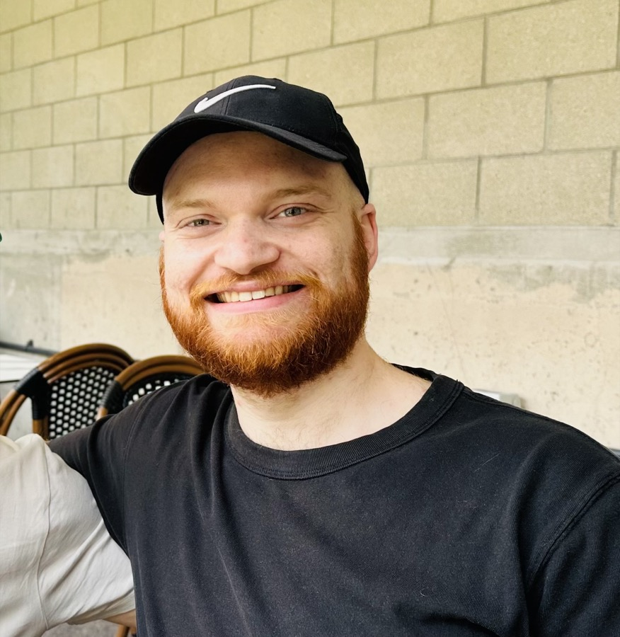

About
Hello, I'm Steven.

I'm a strategic brand specialist that turns complex tech into brand stories.
When I'm not craned over my computer, you'll find me reading with my cat nearby, deep in a video game, or meandering around the world with my camera.